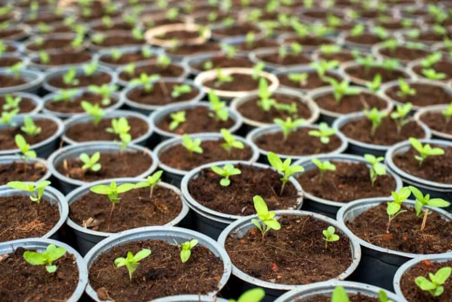
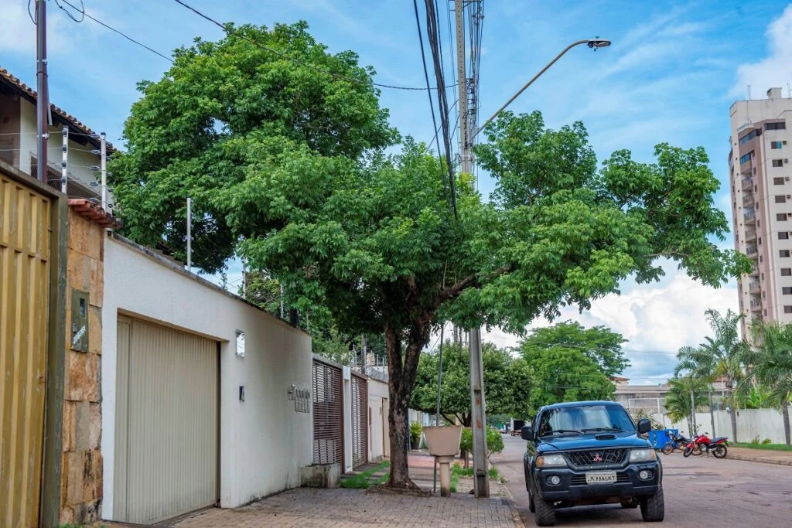
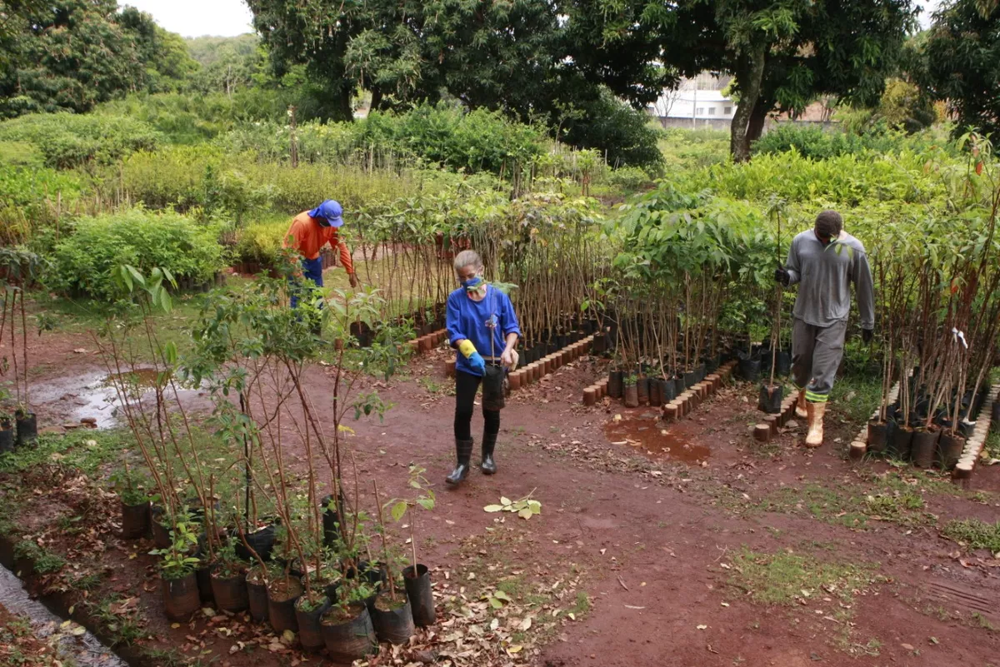

Plantio e Preservação de Árvores
A forma mais direta de resfriar a cidade é aumentar a cobertura vegetal. Árvores nativas são as mais indicadas, pois se adaptam melhor ao clima local, exigem menos cuidados e oferecem sombra e umidade por mais tempo.
🏙️ Planejamento Urbano com Áreas Verdes
Incluir parques, praças e corredores verdes nos projetos da cidade ajuda a distribuir o frescor por todos os bairros. Ruas arborizadas reduzem a temperatura em até 5°C e tornam os espaços mais agradáveis para todos.
📚 Educação e Conscientização
Informar a população sobre a importância das árvores faz com que cada pessoa cuide e preserve o que existe. Escolas, famílias e instituições podem se unir em campanhas de plantio e proteção das áreas verdes.
💡 Ações Simples que Fazem a Diferença
🌳 Plantio de mudas em espaços públicos

🏡 Arborização de quintais e calçadas

🤝 Ações coletivas de conservação

🌿 Conclusão
Cada árvore plantada é um passo para uma Jequié mais fresca, saudável e bonita. A mudança começa com a gente! Preservar o meio ambiente não é só cuidar da natureza — é cuidar de nós mesmos.